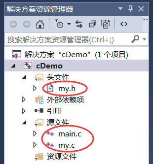

C语言#include的用法详解（文件包含命令）
#include叫做文件包含命令，用来引入对应的头文件（.h文件）。#include 也是C语言预处理命令的一种。#include 的处理过程很简单，就是将头文件的内容插入到该命令所在的位置，从而把头文件和当前源文件连接成一个源文件，这与复制粘贴的效果相同。
#include 的用法有两种，如下所示：
#include <stdHeader.h>
#include "myHeader.h"
< >和双引号" "的区别在于头文件的搜索路径不同：
-
使用尖括号
< >，编译器会到系统路径下查找头文件； -
而使用双引号
" "，编译器首先在当前目录下查找头文件，如果没有找到，再到系统路径下查找。
也就是说，使用双引号比使用尖括号多了一个查找路径，它的功能更为强大。
前面我们一直使用尖括号来引入标准头文件，现在我们也可以使用双引号了，如下所示：
#include "stdio.h" #include "stdlib.h"stdio.h 和 stdlib.h 都是标准头文件，它们存放于系统路径下，所以使用尖括号和双引号都能够成功引入；而我们自己编写的头文件，一般存放于当前项目的路径下，所以不能使用尖括号，只能使用双引号。
当然，你也可以把当前项目所在的目录添加到系统路径，这样就可以使用尖括号了，但是一般没人这么做，纯粹多此一举，费力不讨好。
关于系统路径和当前路径，还有更多的细节需要读者了解，我们将在《细说C语言头文件的路径》一文中深入探讨。在以后的编程中，大家既可以使用尖括号来引入标准头文件，也可以使用双引号来引入标准头文件；不过，我个人的习惯是使用尖括号来引入标准头文件，使用双引号来引入自定义头文件（自己编写的头文件），这样一眼就能看出头文件的区别。
关于 #include 用法的注意事项：
- 一个 #include 命令只能包含一个头文件，多个头文件需要多个 #include 命令。
- 同一个头文件可以被多次引入，多次引入的效果和一次引入的效果相同，因为头文件在代码层面有防止重复引入的机制，具体细节我们将在《防止C语言头文件被重复包含》一文中深入探讨。
- 文件包含允许嵌套，也就是说在一个被包含的文件中又可以包含另一个文件。
#include 用法举例
我们早就学会使用 #include 引入标准头文件了，但是如何使用 #include 引入自定义的头文件呢？下面我们就通过一个例子来简单地演示一下。本例中需要创建三个文件，分别是 main.c、my.c 和 my.h，如下图所示：

my.c 所包含的代码：
//计算从m加到n的和
int sum(int m, int n) {
int i, sum = 0;
for (i = m; i <= n; i++) {
sum += i;
}
return sum;
}
my.h 所包含的代码：
//声明函数 int sum(int m, int n);
main.c 所包含的代码：
#include <stdio.h>
#include "my.h"
int main() {
printf("%d\n", sum(1, 100));
return 0;
}
我们在 my.c 中定义了 sum() 函数，在 my.h 中声明了 sum() 函数，这可能与很多初学者的认知发生了冲突：函数不是在头文件中定义的吗？为什么头文件中只有声明？
「在头文件中定义定义函数和全局变量」这种认知是原则性的错误！不管是标准头文件，还是自定义头文件，都只能包含变量和函数的声明，不能包含定义，否则在多次引入时会引起重复定义错误。
此外，可能还有初学者会问，main.c 只是引入了 my.h，没有引入 my.c，程序在编译时应该找不到函数定义呀，然而当我们亲自去运行程序的时候，却发现运行结果是正确的，这是怎么回事呢？
C语言多文件编程涉及到很多细节，需要深入理解编译和链接的原理，本节我们仅做演示，不做更多讲解，有兴趣的读者请阅读《C语言多文件编程》，届时你将解开以上各种谜团。
关注公众号「站长严长生」，在手机上阅读所有教程，随时随地都能学习。内含一款搜索神器，免费下载全网书籍和视频。

微信扫码关注公众号